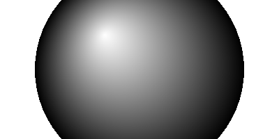

VectorSourceCircularGradient()
语法
VectorSourceCircularGradient(x.d, y.d, Radius.d, [CenterX.d, CenterY.d])概要
Selects a circular gradient as the source for vector drawing operations such as FillPath() or StrokePath(). Initially, the gradient is solid black. Color stops have to be added with the VectorSourceGradientColor() after this function.
参数
x.d, y.d Specifies the center point of the circle that defines the gradient. The coordinates are specified in terms of the #PB_Coordinate_Source coordinate system.
The center point of the circle represents the start (Position 0.0) of the gradient and the perimeter of the circle represents the end (Position 1.0) of the gradient.Radius.d Specifies the radius of the circle that defines the gradient. CenterX.d, CenterY.d (optional) Specifies an optional offset for the starting point of the gradient from the center of the circle. With these parameters, the gradient can be started at any point within the circle.
返回值
无.
备注
See the vectordrawing overview for an introduction to the different coordinate systems.
The color gradient is only defined in the area inside the circle. Outside of the circle, the used source color is depending on the operating system, so drawing operations outside of the defined gradient's area should be avoided.
示例
If OpenWindow(0, 0, 0, 400, 200, "VectorDrawing", #PB_Window_SystemMenu | #PB_Window_ScreenCentered) CanvasGadget(0, 0, 0, 400, 200) If StartVectorDrawing(CanvasVectorOutput(0)) VectorSourceCircularGradient(200, 100, 150, -50, -50) VectorSourceGradientColor(RGBA(255, 255, 255, 255), 0.0) VectorSourceGradientColor(RGBA(0, 0, 0, 255), 1.0) FillVectorOutput() StopVectorDrawing() EndIf Repeat Event = WaitWindowEvent() Until Event = #PB_Event_CloseWindow EndIf
参阅
VectorSourceGradientColor(), VectorSourceLinearGradient(), VectorSourceColor(), VectorSourceImage()
已支持操作系统
所有